UI/UX Designer & Web Developer
Soy diseñadora UI/UX y Desarrolladora Web de la Ciudad de México. Creativa, curiosa y
apasionada por el diseño, la tecnología y la ilustración. Disfruto tener retos y desafíos,
los cuales me han llevado a explorar diferentes áreas de conocimiento y conocer nuevas
tecnologías.
Me apasiona desarrollar proyectos de diseño, crear y hacer que funcionen sitios web y
aplicaciones con programación. En mi experiencia como diseñadora ver un proyecto funcionando y
ayudando a las personas es la mejor de las satisfacciones profesionales.
El diseño y la tecnología deben ser utilizados para mejorar la vida de las personas, es por eso
que en esta etapa de mi vida estas dos áreas han tenido una gran relevancia para poder desarrollar
nuevas habilidades. El conocimiento y las soluciones no tienen limites mientras se sigua teniendo
la curiosidad y el amor a lo que se hace.
"Haz lo que amas, ama lo que haces."
HABILIDADES TÉCNICAS
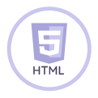 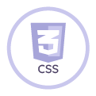 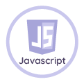 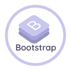 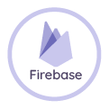 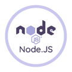 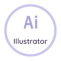 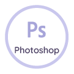 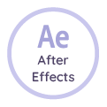HABILIDADES BLANDAS
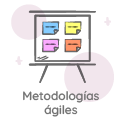 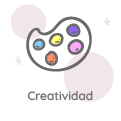 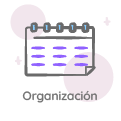 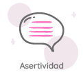 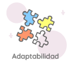 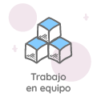Pokemon Easy es una web app donde los fanáticos de Pokemon pueden visualizar los diferentes pokemones de la región Kanto. El usuario puede filtrar los pokemones por número de pokemon, tipo de pokemon además de saber cuántos pokemones hay por cada tipo. En este proyecto se utilizó Css Grid y Flexbox para la maquetación.
Herramientas
Proyecto colaborativo para el restaurante vegano Pand'monium. Esta aplicación web tiene como funcionalidad resolver la problemática de la toma de pedido. La funcionalidad se realizó con el Framework React. Esta diseñada para que pueda ser utilizada en tablet.
Herramientas
Esta red social tiene como principal funcionalidad que el usuario pueda comentar, editar y borrar comentarios propios y de otros usuarios (CRUD). Se implementó como una Single Page Application. Esta orientada a las personas que quieran información de nutrición y ejercicio.
Herramientas
WeEncrypt es un proyecto de aplicación web cuya finalidad es que el usuario pueda enviar por internet de manera segura un link, ubicación o información de contenido confidencial por medio del cifrado y una clave para poder ejecutarlos o leerlos.
Herramientas